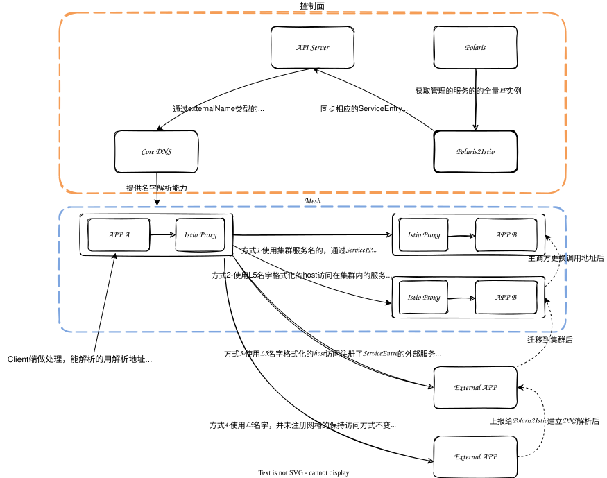

融合、扩展Service Mesh
背景
很多时候服务网格在业务难以落地，往往是因为有历史包袱或者特殊需求，反而没有新设计的项目接入服务网格容易，而原因多是以下几点：
- 私有协议：这里泛指Istio官方未支持的协议，如果不能识别私有协议，也就无法对私有协议进行流量管理（如路由等）； 不能很好地平滑过渡掉原有的北极星或者Consul服务发现；
- 第三方服务发现：比如北极星服务发现得到的IP是实例IP，我们这边要想办法让流量走到ServiceIP上去，通过Virtual Service IP加端口来确定服务和协议，才能利用到边车来管理流量和解析自定义协议；
解决方案
私有协议
私有协议服务网格的解决方案大概有以下两种
- 协议转换
- 协议扩展
协议转换
协议转换顾名思议就是将协议转换成网格内支持的方案。
- 一种是在client多实现个协议转换层，但开发以及部署更新麻烦，但如gRPC-gateway也是种实现方式，只不过gRPC在Istio本身就支持；
- 一种是在边车、adapter或者边缘网关服务去做转换，但一样有上面的问题； 且有可能目前网格内的协议并不合适业务场景，比如性能下降等问题；
协议扩展
这里的协议扩展是指通过Service Mesh来扩展支持私有协议及任意的尚未支持的协议。
自研
自研肯定是能实现的，但对技术要求较高，需要要对数据面修改的技术能力，像Envoy是用C++实现的，另外控制面也要做一定修改。
Aeraki
Aeraki Mesh可以帮助你在服务网格中管理任何七层协议。目前已经支持了 Dubbo、Thrit、Redis、Kafka、ZooKeeper 等开源协议。你还可以使用 Aeraki Mesh 提供的 MetaProtocol 协议扩展框架来管理私有协议的七层流量。
|
|
实现编解码接口较简单，仅需实现 decode，encode 和 onError 三个方法即可。
而其它服务治理能力都已经通过MetaPortocol这个EnvoyFilter，以插件的形式统一实现了支持。

而在Istio中声明使用它也较简单，仅需创建一个 Aeraki 的 ApplicationProtocol CRD资源：
|
|
第三方服务发现
几种融合网格服务发现名字的方案对比：
| 方案名 | 优点 | 缺点 |
|---|---|---|
| 基于服务发现代理 | 完全不需要修改业务代码 | 需要开发代理服务 |
| 基于边车 | 更符合后面网格建设的规范 能处理自定义协议 |
需要修改业务请求Client 在边车中进行服务发现较重 |
| 基于配置 | 原理较为简单 | 需要修改业务请求Client 不够灵活，不够通用 |
| 基于DNS | 原理较为简单，易维护 | 需要修改业务请求Client |
| DNS+边车 | 原理较为简单，易维护 能处理自定义协议 |
需要修改业务请求Client |
| 服务发现改成非k8s service | 可以照顾原有VM上的服务 | 需要自研控制面，数据面也要进行一些修改 |
我个人比较喜欢的是代理、DNS和用Consul替代的这三种方案，其中最符合istio原有流程是DNS这种，方案过多，就不一一详细说明了，这里主要提DNS模式下，通过X2Istio注册ServiceEntry的方式。

X2Istio (Polaris2Istio)
- ServiceEntry自动分配VIP；
- Service ExternalName提供DNS CNAME记录；

- 走方式4调用将上报给Polaris组件以供他自动建立新的ServiceEntry，这样就回到了方式3，后面就不用再进行L5发现而是直接DNS解析走ServiceIP了；
- 走方式3调用的服务如果后面迁移到了集群内，那么将externalName改成集群内的Service，后面变成方式2，这样就可以具备完整的网格能力；
- 当主调都改成直接使用ServiceName时，将都走方式1，有其它几种调用方式的存在，将大大降低业务改造的工作量。
图中的Polaris2Istio就相当于本图中的X2Istio。
Polaris2Istio: https://github.com/aeraki-mesh/polaris2istio
ServiceEntry自动分配IP并解析
DNS 代理还支持为没有明确定义的 ServiceEntry 自动分配地址。这是通过 ISTIO_META_DNS_AUTO_ALLOCATE 选项配置的。
启用此特性后，DNS 响应将为每个 ServiceEntry 自动分配一个不同的独立地址。然后代理能匹配请求与 IP 地址，并将请求转发到相应的 ServiceEntry。
参考：https://istio.io/latest/zh/docs/ops/configuration/traffic-management/dns-proxy/
DNS解析
DNS是k8s内部就在使用的名字解析服务（目前集群中使用的是CoreDNS），我们只要解决名字转义后的域名能够一样解析到ServiceIP就能解决服务发现的问题，这里可以利用Service本身就有EnternalName来CNAME解析解决。
参考：https://github.com/kubernetes/kubernetes/issues/39792
externalname
参考：https://kubernetes.io/docs/concepts/services-networking/service/#externalname
ServiceEntry
可按如下配置：
|
|
参考： https://github.com/aeraki-mesh/polaris2istio
请注意我们集群当中使用的是CoreDNS，它要求externalName的格式必须是符合FQDN的，即最全的形式。
对于已经在集群当中的Service，只需要创建有原服务发现名字和service映射关系的externalName类型的Service就行；
对于不在集群当中的L5服务，则需要先创建ServiceEntry按入网格，并通过Polaris2Istio来维护实例变更； 由于各项目不一样，源码中没有根据管理的Service来匹配，而是直接创建相应的ServiceEntry即可。
关于Polaris的具体实现，下篇文章再讲。
总结
现实情况不总是理想模型，我们要根据实际情况进行调整，没有最完美的架构，只有最合适的架构。